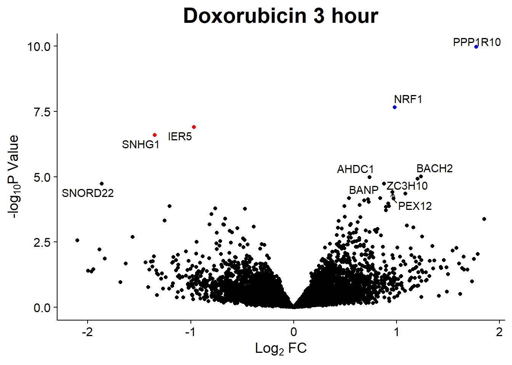
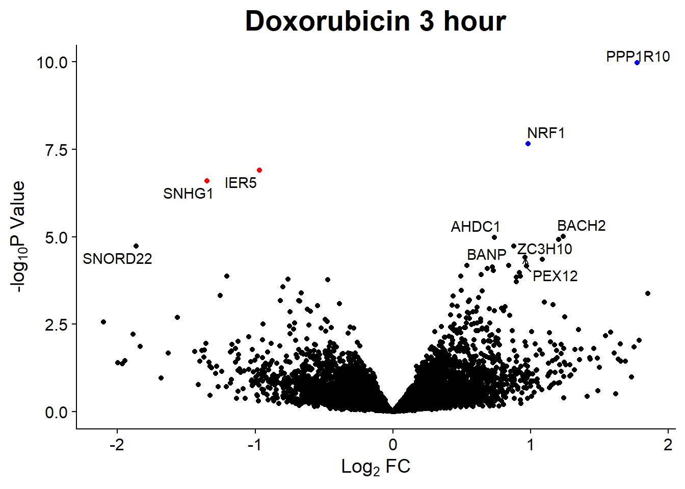

Run1_analysis
ERM
20230118
Last updated: 2023-01-20
Checks: 6 1
Knit directory: Cardiotoxicity/
This reproducible R Markdown analysis was created with workflowr (version 1.7.0). The Checks tab describes the reproducibility checks that were applied when the results were created. The Past versions tab lists the development history.
Great! Since the R Markdown file has been committed to the Git repository, you know the exact version of the code that produced these results.
Great job! The global environment was empty. Objects defined in the global environment can affect the analysis in your R Markdown file in unknown ways. For reproduciblity it’s best to always run the code in an empty environment.
The command set.seed(20230109) was run prior to running
the code in the R Markdown file. Setting a seed ensures that any results
that rely on randomness, e.g. subsampling or permutations, are
reproducible.
Great job! Recording the operating system, R version, and package versions is critical for reproducibility.
Nice! There were no cached chunks for this analysis, so you can be confident that you successfully produced the results during this run.
Using absolute paths to the files within your workflowr project makes it difficult for you and others to run your code on a different machine. Change the absolute path(s) below to the suggested relative path(s) to make your code more reproducible.
| absolute | relative |
|---|---|
| C:/Program Files/R_WD/Cardiotoxicity/data/ | data |
| C:/Program Files/R_WD/Cardiotoxicity/data/siglist.txt | data/siglist.txt |
Great! You are using Git for version control. Tracking code development and connecting the code version to the results is critical for reproducibility.
The results in this page were generated with repository version 443a9f3. See the Past versions tab to see a history of the changes made to the R Markdown and HTML files.
Note that you need to be careful to ensure that all relevant files for
the analysis have been committed to Git prior to generating the results
(you can use wflow_publish or
wflow_git_commit). workflowr only checks the R Markdown
file, but you know if there are other scripts or data files that it
depends on. Below is the status of the Git repository when the results
were generated:
Ignored files:
Ignored: .RData
Ignored: .Rhistory
Ignored: .Rproj.user/
Ignored: data/.txt
Ignored: data/allgenes.txt
Ignored: data/data_outline.txt
Ignored: data/mymatrix.RDS
Ignored: data/sigVDA24.txt
Ignored: data/sigVDA3.txt
Ignored: data/sigVDX24.txt
Ignored: data/sigVDX3.txt
Ignored: data/sigVEP24.txt
Ignored: data/sigVEP3.txt
Ignored: data/sigVMT24.txt
Ignored: data/sigVMT3.txt
Ignored: data/sigVTR24.txt
Ignored: data/sigVTR3.txt
Untracked files:
Untracked: analysis/.txt
Untracked: reneebasecode.R
Unstaged changes:
Deleted: analysis/first-try.Rmd
Note that any generated files, e.g. HTML, png, CSS, etc., are not included in this status report because it is ok for generated content to have uncommitted changes.
These are the previous versions of the repository in which changes were
made to the R Markdown (analysis/RNAseqrun_1_analysis.Rmd)
and HTML (docs/RNAseqrun_1_analysis.html) files. If you’ve
configured a remote Git repository (see ?wflow_git_remote),
click on the hyperlinks in the table below to view the files as they
were in that past version.
| File | Version | Author | Date | Message |
|---|---|---|---|---|
| Rmd | 443a9f3 | reneeisnowhere | 2023-01-20 | adding in GO analysis |
| html | c8cca5b | reneeisnowhere | 2023-01-18 | Build site. |
| Rmd | 1d0236c | reneeisnowhere | 2023-01-18 | volcano plot updates again |
| html | 39b0d24 | reneeisnowhere | 2023-01-18 | Build site. |
| Rmd | 0ea0bad | reneeisnowhere | 2023-01-18 | volcano plot updates |
| Rmd | b8d76c6 | reneeisnowhere | 2023-01-18 | volcano plot updates |
| html | 0f77ca3 | reneeisnowhere | 2023-01-13 | Build site. |
| Rmd | ecdefdf | reneeisnowhere | 2023-01-13 | volcanoplot update |
| Rmd | 057a3be | reneeisnowhere | 2023-01-13 | adding in volcano plot code |
| html | b73e8ab | reneeisnowhere | 2023-01-13 | updating DEGs |
| Rmd | 7dd21e1 | reneeisnowhere | 2023-01-13 | updating the Rmarkdown code |
| html | 7eccdb8 | reneeisnowhere | 2023-01-12 | Build site. |
| Rmd | 93c4409 | reneeisnowhere | 2023-01-12 | try again |
| html | 8ebcfd8 | reneeisnowhere | 2023-01-12 | Build site. |
| Rmd | 56eab44 | reneeisnowhere | 2023-01-12 | end of day |
| Rmd | ae8266e | reneeisnowhere | 2023-01-12 | updating the rmarkdown |
| html | f6c386f | reneeisnowhere | 2023-01-12 | Build site. |
| Rmd | 82fa5e5 | reneeisnowhere | 2023-01-12 | addressing functional errors |
| Rmd | 83aef3a | reneeisnowhere | 2023-01-12 | addressing functional errors |
| Rmd | b456c92 | reneeisnowhere | 2023-01-11 | wflow_git_commit(all = TRUE) |
| Rmd | 943e565 | reneeisnowhere | 2023-01-11 | updating the counts filtering |
| Rmd | 921e76f | reneeisnowhere | 2023-01-11 | updating the counts filtering |
| Rmd | 98fe131 | reneeisnowhere | 2023-01-11 | wflow_publish(c("analysis/license.Rmd", "analysis/index.Rmd")) |
| Rmd | 364d73d | reneeisnowhere | 2023-01-11 | wflow_git_commit(all = TRUE) |
| Rmd | be977ac | reneeisnowhere | 2023-01-10 | testing interface |
| Rmd | bdb802d | reneeisnowhere | 2023-01-10 | Starting the editing |
| Rmd | ec76d0d | reneeisnowhere | 2023-01-09 | Having issues with rmark |
Hello! I am first loading all the beautiful libraries I will need.
library(Biobase)
library(edgeR)
library(limma)
library(RColorBrewer)
library(mixOmics)
library(VennDiagram)
library(HTSFilter)
library(ggplot2)
library(gridExtra)
library(reshape2)
library(devtools)
library(AnnotationHub)
library(tidyverse)
library(scales)
library(biomaRt)
library(Homo.sapiens)
library(cowplot)
library(ggrepel)The next step is to load all the data I will be using. Currently, I am not posting the raw data, but I will release in the future.
This is how I retrieved the gene symbols.
###now we add genenames to the geneid###
geneid <- rownames(mymatrix) ### pulls the names we have in the counts file
genes <- select(Homo.sapiens, keys=geneid, columns=c("SYMBOL"),
keytype="ENTREZID")
genes <- genes[!duplicated(genes$ENTREZID),]
mymatrix$genes <- genes##Filtering out low count genes
Filtering the genes that are lowly expressed using several methods.
First method, removing only those rows with zero counts across all samples.
table(rowSums(mymatrix$counts==0)==72)
FALSE TRUE
24931 3464 This filtering would leave 24931 genes and remove 3464, That is too many leftover genes!
So now to try something a little more stringent using the built in function from the edgeR package.
keep <- filterByExpr.DGEList(mymatrix, group = group)
filter_test <- mymatrix[keep, , keep.lib.sizes=FALSE]
dim(filter_test)[1] 14448 72This method effectively uses a cutoff off that leaves 14448 genes.
The cutoff is determined by keeping genes that have a count-per-million
(CPM) above 10, (the default minimum set) in 6 samples. A set is
determined using the design matrix.
For my design, I grouped my 72 samples into sets of 6, one set includes
each individual + a specific treatment + a specific time.
The beginning cutoff-standard in our lab is to start by using the rowMeans >0 cutoff on the log10 of cpm.
cpm <- cpm(mymatrix)
lcpm <- cpm(mymatrix, log=TRUE) ### for determining the basic cutoffs
dim(lcpm)[1] 28395 72L <- mean(mymatrix$samples$lib.size) * 1e-6
M <- median(mymatrix$samples$lib.size) * 1e-6
c(L, M)[1] 4.679061 4.494188filcpm_matrix <- subset(lcpm, (rowMeans(lcpm)>0))
dim(filcpm_matrix)[1] 14823 72##method 2 with rowMeans
row_means <- rowMeans(lcpm)
x <- mymatrix[row_means > 0,]
dim(x)[1] 14823 72Both of the above methods leave 14823 genes from 28,395. I prefer the second method, which keeps the DGEList format of the data.


now I will produce the RIN x sample plots:###


Principal Component Analysis
PCA was done using code adopted from J. Blischak.
### Daunorubicin 
### Doxorubicin 
### Epirubicin 
### Mitoxantrone 
### Trastuzumab 
### Vehicle 
PCA of all 72 samples
Warning: `qplot()` was deprecated in ggplot2 3.4.0. ## Variance contribution from treatment, extraction time, or individual
on PC1 and PC2
## Variance contribution from treatment, extraction time, or individual
on PC1 and PC2


Differential Expression

Warning in write.csv(siglist[i], fnl, col.names = TRUE, row.names = FALSE, :
attempt to set 'col.names' ignoredWarning in write.csv(siglist[i], fnl, col.names = TRUE, row.names = FALSE, :
attempt to set 'sep' ignoredWarning in write.csv(siglist[i], fnl, col.names = TRUE, row.names = FALSE, :
attempt to set 'col.names' ignoredWarning in write.csv(siglist[i], fnl, col.names = TRUE, row.names = FALSE, :
attempt to set 'sep' ignoredWarning in write.csv(siglist[i], fnl, col.names = TRUE, row.names = FALSE, :
attempt to set 'col.names' ignoredWarning in write.csv(siglist[i], fnl, col.names = TRUE, row.names = FALSE, :
attempt to set 'sep' ignoredWarning in write.csv(siglist[i], fnl, col.names = TRUE, row.names = FALSE, :
attempt to set 'col.names' ignoredWarning in write.csv(siglist[i], fnl, col.names = TRUE, row.names = FALSE, :
attempt to set 'sep' ignoredWarning in write.csv(siglist[i], fnl, col.names = TRUE, row.names = FALSE, :
attempt to set 'col.names' ignoredWarning in write.csv(siglist[i], fnl, col.names = TRUE, row.names = FALSE, :
attempt to set 'sep' ignoredWarning in write.csv(siglist[i], fnl, col.names = TRUE, row.names = FALSE, :
attempt to set 'col.names' ignoredWarning in write.csv(siglist[i], fnl, col.names = TRUE, row.names = FALSE, :
attempt to set 'sep' ignoredWarning in write.csv(siglist[i], fnl, col.names = TRUE, row.names = FALSE, :
attempt to set 'col.names' ignoredWarning in write.csv(siglist[i], fnl, col.names = TRUE, row.names = FALSE, :
attempt to set 'sep' ignoredWarning in write.csv(siglist[i], fnl, col.names = TRUE, row.names = FALSE, :
attempt to set 'col.names' ignoredWarning in write.csv(siglist[i], fnl, col.names = TRUE, row.names = FALSE, :
attempt to set 'sep' ignoredWarning in write.csv(siglist[i], fnl, col.names = TRUE, row.names = FALSE, :
attempt to set 'col.names' ignoredWarning in write.csv(siglist[i], fnl, col.names = TRUE, row.names = FALSE, :
attempt to set 'sep' ignoredWarning in write.csv(siglist[i], fnl, col.names = TRUE, row.names = FALSE, :
attempt to set 'col.names' ignoredWarning in write.csv(siglist[i], fnl, col.names = TRUE, row.names = FALSE, :
attempt to set 'sep' ignoredmm2 <- model.matrix(~0 + group1)
##made the matrix model using the interaction between Treatment and Time
colnames(mm2) <- c("A3", "X3", "E3","M3","T3", "V3","A24", "X24", "E24","M24","T24", "V24")
y2 <- voom(x, mm2)
corfit2 <- duplicateCorrelation(y2, mm2, block = indv)
v2 <- voom(x, mm2, block = indv, correlation = corfit2$consensus)
fit2 <- lmFit(v2, mm2, block = indv, correlation = corfit2$consensus)
vfit2 <- lmFit(y2, mm2)
vfit2<- contrasts.fit(vfit2, contrasts=cm2)
efit2 <- eBayes(vfit2)
V.DA.top= topTable(efit2, coef=1, adjust="BH", number=Inf, sort.by="p")
### sorting all top expressed genes for the Vehicle and Daunorubicin 3 hour treatments
sigVDA3 = V.DA.top[V.DA.top$adj.P.Val < .1 , ]
### this helped pull only those files that were at an adjusted p value of less than 0.1
### This p-value was used as the beginning examination of the data, considering I will run multiple runs of this RNA seq library.This is the example code I used to process my data. I used two model matrix initially, one set up was /~0 +drug +time and the second was /~0+group1, then blocking by individual. That is why you see the number 2 in the code above.
#DEG summary
Importance of components:
PC1 PC2 PC3 PC4 PC5 PC6
Standard deviation 60.2067 44.5108 32.3037 30.98489 27.1431 24.07762
Proportion of Variance 0.2445 0.1337 0.0704 0.06477 0.0497 0.03911
Cumulative Proportion 0.2445 0.3782 0.4486 0.51337 0.5631 0.60218
PC7 PC8 PC9 PC10 PC11 PC12
Standard deviation 23.26775 21.37712 20.13091 18.19509 17.63059 16.30004
Proportion of Variance 0.03652 0.03083 0.02734 0.02233 0.02097 0.01792
Cumulative Proportion 0.63870 0.66953 0.69687 0.71921 0.74018 0.75810
PC13 PC14 PC15 PC16 PC17 PC18
Standard deviation 15.87695 14.24554 13.51806 12.67177 11.84085 11.44481
Proportion of Variance 0.01701 0.01369 0.01233 0.01083 0.00946 0.00884
Cumulative Proportion 0.77511 0.78880 0.80113 0.81196 0.82142 0.83025
PC19 PC20 PC21 PC22 PC23 PC24 PC25
Standard deviation 11.08484 10.4711 9.86347 9.53287 9.25138 9.06027 8.70778
Proportion of Variance 0.00829 0.0074 0.00656 0.00613 0.00577 0.00554 0.00512
Cumulative Proportion 0.83854 0.8459 0.85250 0.85863 0.86441 0.86995 0.87506
PC26 PC27 PC28 PC29 PC30 PC31 PC32
Standard deviation 8.40220 8.26732 8.04037 7.85926 7.76676 7.67958 7.48930
Proportion of Variance 0.00476 0.00461 0.00436 0.00417 0.00407 0.00398 0.00378
Cumulative Proportion 0.87982 0.88444 0.88880 0.89296 0.89703 0.90101 0.90480
PC33 PC34 PC35 PC36 PC37 PC38 PC39
Standard deviation 7.34178 7.28566 7.22861 7.1043 6.99972 6.94542 6.83650
Proportion of Variance 0.00364 0.00358 0.00353 0.0034 0.00331 0.00325 0.00315
Cumulative Proportion 0.90843 0.91201 0.91554 0.9189 0.92225 0.92550 0.92866
PC40 PC41 PC42 PC43 PC44 PC45 PC46
Standard deviation 6.75717 6.73038 6.57835 6.54307 6.53123 6.4395 6.37432
Proportion of Variance 0.00308 0.00306 0.00292 0.00289 0.00288 0.0028 0.00274
Cumulative Proportion 0.93174 0.93479 0.93771 0.94060 0.94348 0.9463 0.94902
PC47 PC48 PC49 PC50 PC51 PC52 PC53
Standard deviation 6.34772 6.23190 6.17748 6.0816 6.01946 5.9644 5.89730
Proportion of Variance 0.00272 0.00262 0.00257 0.0025 0.00244 0.0024 0.00235
Cumulative Proportion 0.95173 0.95435 0.95693 0.9594 0.96187 0.9643 0.96661
PC54 PC55 PC56 PC57 PC58 PC59 PC60
Standard deviation 5.8378 5.80173 5.72099 5.69367 5.65008 5.60128 5.47568
Proportion of Variance 0.0023 0.00227 0.00221 0.00219 0.00215 0.00212 0.00202
Cumulative Proportion 0.9689 0.97118 0.97339 0.97558 0.97773 0.97985 0.98187
PC61 PC62 PC63 PC64 PC65 PC66 PC67
Standard deviation 5.46660 5.38710 5.31872 5.25710 5.11760 5.0166 4.83245
Proportion of Variance 0.00202 0.00196 0.00191 0.00186 0.00177 0.0017 0.00158
Cumulative Proportion 0.98389 0.98585 0.98776 0.98962 0.99139 0.9931 0.99466
PC68 PC69 PC70 PC71 PC72
Standard deviation 4.73475 4.57831 4.51242 3.92680 4.923e-14
Proportion of Variance 0.00151 0.00141 0.00137 0.00104 0.000e+00
Cumulative Proportion 0.99617 0.99759 0.99896 1.00000 1.000e+00 V.DA V.DX V.EP V.MT V.TR V.DA24 V.DX24 V.EP24 V.MT24 V.TR24
Down 63 3 11 13 0 3342 3013 2871 320 0
NotSig 14456 14814 14714 14780 14823 8279 8993 9034 13970 14823
Up 304 6 98 30 0 3202 2817 2918 533 0##Graphing DEgenes
I then created a counts table for each set of genes. Luckily, the counts are stored in the y2 object, which is an EList class object. I can ‘simplify’ this process because I kept the DEGList format initially. I first made an object called ‘countstotal’ from the EList y2. For ggploting later, I subsetted ‘countstotal’ by treatments.
countstotal <- y2$E
colnames(countstotal) <- smlabel
boxplot(countstotal)
Da3counts <- as.data.frame(as.table(countstotal[,c(1,6,13,18,25,30,37,42,49,54,61,66)]))library(cowplot)
###Volcano Plots
 

Graphing specific gene expression
First get a list of genes you want to see. There are multiple was to “see” these. I used the word ‘apple’ to store my list
apple <- c('CDKN1A',"BBC3", "MDM2", "BCL2", "BAX", "GPX1", 'MFN2')#,"HAS3",'CYBA','TOP2B', 'TP53', 'ABCC1', 'ABCC5', 'RRAGD', 'DUSP13', 'NDUFAF1', 'TDP2', 'TXNIP','BRCA1', 'CTCF','RAD21','RYR2')
##find the index number for each gene
indices <- match(apple, x$genes$SYMBOL)
###subset the matrix
entreset <- x$genes$ENTREZID[indices]
gnames <- cbind(entreset,apple)
colnames(gnames) <- c("ENTREZID","SYMBOL" )Voila!
###now to ggplot The nextstep is to make plots of all the genes you want to see. I am stopping here, because I would like to add for (gn in indices){ print(Da24counts %>% filter(Tags == gn) %>% ggplot(aes(x=as.factor(Samples), y=Freq))+ geom_boxplot(aes(fill = as.factor(Samples)))+ theme_cowplot(font_size =12,)+
ggtitle(paste0(gnames$gnames," expression in Daunorubicin at 24 hours"))+
labs(y = "Log2(cpm)",x= "", fill = "Treatment"))} `{r} plot_function <- function(index, df) { for (i in index) { data <- df %>% filter(ENTREZID == i) if (!nrow(data)) next print(data %>% ggplot(aes(x=as.factor(Samples), y=Counts))+ geom_boxplot(aes(fill = as.factor(Samples)))+ theme_cowplot(font_size =12,)+ ggtitle(paste0(i,” expression “))+
labs(y = "Log2(cpm)",x= "", fill = "Treatment"))
}}
apple <- as.data.frame(sigVDA24$ENTREZID)
plot_function(apple,Dx3counts)+theme(axis.text.x = element_text(size= 8,angle = 90))+scale_x_discrete(labels=ENTREZID)
<br>
<p>
<button type="button" class="btn btn-default btn-workflowr btn-workflowr-sessioninfo"
data-toggle="collapse" data-target="#workflowr-sessioninfo"
style = "display: block;">
<span class="glyphicon glyphicon-wrench" aria-hidden="true"></span>
Session information
</button>
</p>
<div id="workflowr-sessioninfo" class="collapse">
```r
sessionInfo()R version 4.2.2 (2022-10-31 ucrt)
Platform: x86_64-w64-mingw32/x64 (64-bit)
Running under: Windows 10 x64 (build 19044)
Matrix products: default
locale:
[1] LC_COLLATE=English_United States.utf8
[2] LC_CTYPE=English_United States.utf8
[3] LC_MONETARY=English_United States.utf8
[4] LC_NUMERIC=C
[5] LC_TIME=English_United States.utf8
attached base packages:
[1] stats4 grid stats graphics grDevices utils datasets
[8] methods base
other attached packages:
[1] ggrepel_0.9.2
[2] cowplot_1.1.1
[3] Homo.sapiens_1.3.1
[4] TxDb.Hsapiens.UCSC.hg19.knownGene_3.2.2
[5] org.Hs.eg.db_3.15.0
[6] GO.db_3.15.0
[7] OrganismDbi_1.38.1
[8] GenomicFeatures_1.48.4
[9] GenomicRanges_1.48.0
[10] GenomeInfoDb_1.32.4
[11] AnnotationDbi_1.58.0
[12] IRanges_2.30.1
[13] S4Vectors_0.34.0
[14] biomaRt_2.52.0
[15] scales_1.2.1
[16] forcats_0.5.2
[17] stringr_1.5.0
[18] dplyr_1.0.10
[19] purrr_1.0.1
[20] readr_2.1.3
[21] tidyr_1.2.1
[22] tibble_3.1.8
[23] tidyverse_1.3.2
[24] AnnotationHub_3.4.0
[25] BiocFileCache_2.4.0
[26] dbplyr_2.3.0
[27] devtools_2.4.5
[28] usethis_2.1.6
[29] reshape2_1.4.4
[30] gridExtra_2.3
[31] HTSFilter_1.36.0
[32] VennDiagram_1.7.3
[33] futile.logger_1.4.3
[34] mixOmics_6.20.0
[35] ggplot2_3.4.0
[36] lattice_0.20-45
[37] MASS_7.3-58.1
[38] RColorBrewer_1.1-3
[39] edgeR_3.38.4
[40] limma_3.52.4
[41] Biobase_2.56.0
[42] BiocGenerics_0.42.0
[43] workflowr_1.7.0
loaded via a namespace (and not attached):
[1] utf8_1.2.2 tidyselect_1.2.0
[3] RSQLite_2.2.20 htmlwidgets_1.6.1
[5] BiocParallel_1.30.4 munsell_0.5.0
[7] codetools_0.2-18 miniUI_0.1.1.1
[9] withr_2.5.0 colorspace_2.0-3
[11] filelock_1.0.2 highr_0.10
[13] knitr_1.41 rstudioapi_0.14
[15] labeling_0.4.2 MatrixGenerics_1.8.1
[17] git2r_0.30.1 GenomeInfoDbData_1.2.8
[19] farver_2.1.1 bit64_4.0.5
[21] rprojroot_2.0.3 vctrs_0.5.1
[23] generics_0.1.3 lambda.r_1.2.4
[25] xfun_0.36 timechange_0.2.0
[27] R6_2.5.1 locfit_1.5-9.7
[29] bitops_1.0-7 cachem_1.0.6
[31] DelayedArray_0.22.0 assertthat_0.2.1
[33] promises_1.2.0.1 BiocIO_1.6.0
[35] googlesheets4_1.0.1 gtable_0.3.1
[37] processx_3.8.0 rlang_1.0.6
[39] genefilter_1.78.0 splines_4.2.2
[41] rtracklayer_1.56.1 gargle_1.2.1
[43] broom_1.0.2 BiocManager_1.30.19
[45] yaml_2.3.6 modelr_0.1.10
[47] backports_1.4.1 httpuv_1.6.8
[49] RBGL_1.72.0 tools_4.2.2
[51] ellipsis_0.3.2 jquerylib_0.1.4
[53] sessioninfo_1.2.2 Rcpp_1.0.9
[55] plyr_1.8.8 progress_1.2.2
[57] zlibbioc_1.42.0 RCurl_1.98-1.9
[59] ps_1.7.2 prettyunits_1.1.1
[61] urlchecker_1.0.1 SummarizedExperiment_1.26.1
[63] haven_2.5.1 fs_1.5.2
[65] magrittr_2.0.3 RSpectra_0.16-1
[67] futile.options_1.0.1 reprex_2.0.2
[69] googledrive_2.0.0 whisker_0.4.1
[71] matrixStats_0.63.0 pkgload_1.3.2
[73] hms_1.1.2 mime_0.12
[75] evaluate_0.20 xtable_1.8-4
[77] XML_3.99-0.13 readxl_1.4.1
[79] compiler_4.2.2 ellipse_0.4.3
[81] crayon_1.5.2 htmltools_0.5.4
[83] corpcor_1.6.10 later_1.3.0
[85] tzdb_0.3.0 geneplotter_1.74.0
[87] lubridate_1.9.0 DBI_1.1.3
[89] formatR_1.14 rappdirs_0.3.3
[91] Matrix_1.5-3 cli_3.6.0
[93] parallel_4.2.2 igraph_1.3.5
[95] pkgconfig_2.0.3 getPass_0.2-2
[97] GenomicAlignments_1.32.1 xml2_1.3.3
[99] rARPACK_0.11-0 annotate_1.74.0
[101] bslib_0.4.2 XVector_0.36.0
[103] rvest_1.0.3 callr_3.7.3
[105] digest_0.6.31 graph_1.74.0
[107] Biostrings_2.64.1 rmarkdown_2.20
[109] cellranger_1.1.0 restfulr_0.0.15
[111] curl_5.0.0 shiny_1.7.4
[113] Rsamtools_2.12.0 rjson_0.2.21
[115] lifecycle_1.0.3 jsonlite_1.8.4
[117] viridisLite_0.4.1 fansi_1.0.3
[119] pillar_1.8.1 KEGGREST_1.36.3
[121] fastmap_1.1.0 httr_1.4.4
[123] pkgbuild_1.4.0 survival_3.5-0
[125] interactiveDisplayBase_1.34.0 glue_1.6.2
[127] remotes_2.4.2 png_0.1-8
[129] BiocVersion_3.15.2 bit_4.0.5
[131] stringi_1.7.12 sass_0.4.4
[133] profvis_0.3.7 blob_1.2.3
[135] DESeq2_1.36.0 memoise_2.0.1